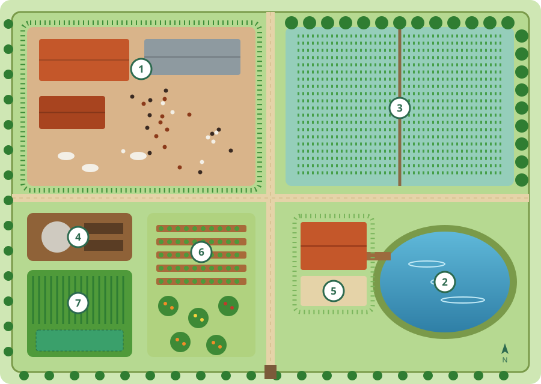
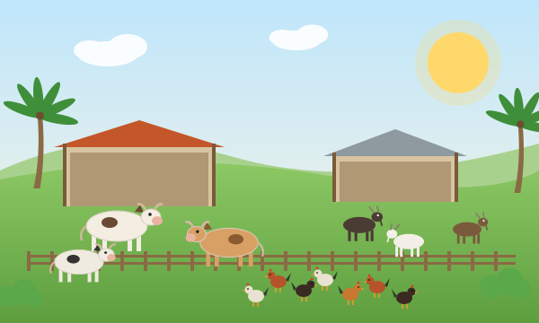
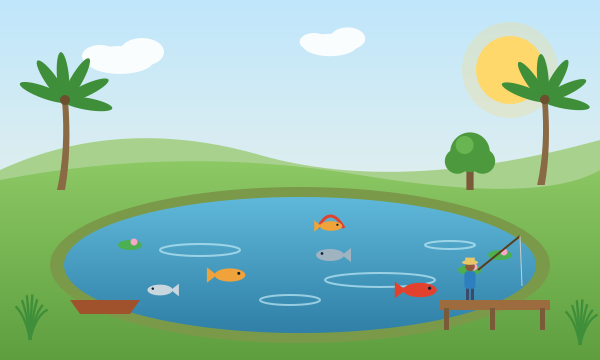
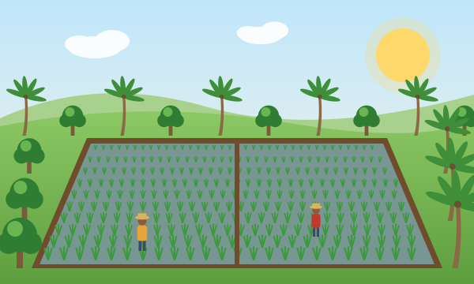
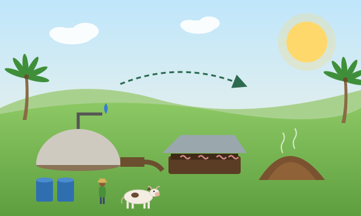
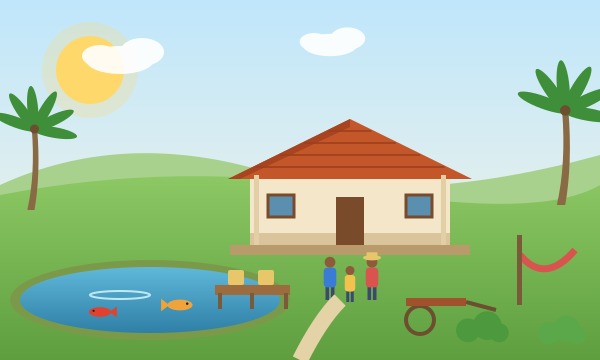
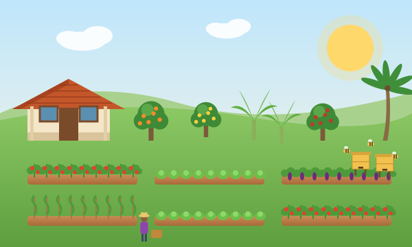
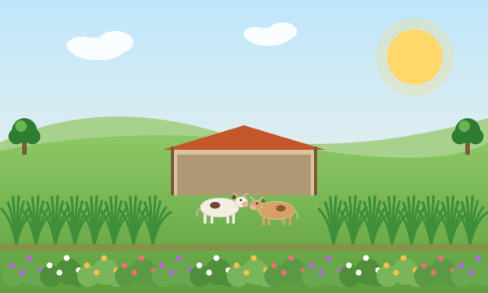

Integrated Organic Farm Guideஒருங்கிணைந்த இயற்கை பண்ணை வழிகாட்டி
Practical guides for integrated organic farming — crops, dairy and farm setup for sustainable living and financial freedom.ஒருங்கிணைந்த இயற்கை விவசாயத்திற்கான நடைமுறை வழிகாட்டிகள் — நிலையான வாழ்வுக்கும் நிதி சுதந்திரத்துக்கும் பயிர், பால் பண்ணை, பண்ணை அமைப்பு.
Sustainable farming is the path to financial freedom. When crops, cattle, water and soil work together, every output feeds another — dung becomes gas and manure, straw becomes fodder, milk becomes value-added products — cutting costs and building steady income year after year. Practical guides in English and Tamil.நிலையான விவசாயமே நிதி சுதந்திரத்துக்கான வழி. பயிர், கால்நடை, நீர், மண் ஒன்றிணைந்து செயல்படும்போது ஒவ்வொரு விளைபொருளும் இன்னொன்றுக்கு உதவுகிறது — சாணம் எரிவாயுவும் உரமும் ஆகிறது, வைக்கோல் தீவனமாகிறது, பால் மதிப்புக்கூட்டு பொருட்களாகிறது — செலவு குறைந்து ஆண்டுதோறும் நிலையான வருமானம் கிடைக்கிறது. ஆங்கிலம் மற்றும் தமிழில் நடைமுறை வழிகாட்டிகள்.
2-acre integrated organic farm — model layout2 ஏக்கர் ஒருங்கிணைந்த இயற்கை பண்ணை — மாதிரி வரைபடம்
In an integrated farm, nothing is waste. Livestock feed the soil, the soil feeds crops and fodder, the pond stores water and grows fish, trees protect everything — and a farmhouse by the pond lets visitors experience it all. Lower cost, higher income.ஒருங்கிணைந்த பண்ணையில் எதுவும் கழிவு அல்ல. கால்நடைகள் மண்ணுக்கு உணவளிக்கின்றன, மண் பயிருக்கும் தீவனத்துக்கும் உணவளிக்கிறது, குளம் நீரைச் சேமித்து மீன் வளர்க்கிறது, மரங்கள் அனைத்தையும் பாதுகாக்கின்றன — குளத்தருகே உள்ள பண்ணை வீடு வருகையாளர்களுக்கு இதை நேரில் அனுபவிக்க உதவுகிறது. குறைந்த செலவு, நிறைந்த வருமானம்.

Land allocation (2 acres = 200 cents)நில ஒதுக்கீடு (2 ஏக்கர் = 200 சென்ட்)
| 1Livestock — cows, goats, country chickenகால்நடை — மாடு, ஆடு, நாட்டுக்கோழி | 55 |
| 2Fish pondமீன் குளம் | 20 |
| 3Crops with tree borderமர வேலியுடன் பயிர் நிலம் | 50 |
| 4Manure unit — biogas, compost, vermicompostஉர அலகு — உயிர் வாயு, மட்கு உரம், மண்புழு உரம் | 10 |
| 5Farmhouse & agri-tour stay (by the pond)பண்ணை வீடு & வேளாண் சுற்றுலா தங்குமிடம் (குளத்தருகே) | 15 |
| 6Vegetables, fruit trees & beesகாய்கறி, பழ மரங்கள் & தேனீ | 30 |
| 7Green fodder, azolla & herbal borderபசுந்தீவனம், அசோலா & மூலிகை வேலி | 20 |
| Totalமொத்தம் | 200 centsசென்ட் |
A model only — adjust areas to your soil, water source, slope and budget. Paths, bunds and boundary trees run between the zones.இது ஒரு மாதிரி மட்டுமே — உங்கள் மண், நீர் ஆதாரம், நிலச்சரிவு, பட்ஜெட்டுக்கு ஏற்ப பரப்பை மாற்றிக்கொள்ளுங்கள். பகுதிகளுக்கு இடையே பாதை, வரப்பு, எல்லை மரங்கள் அமையும்.

1Livestock — the heart of the farmகால்நடை — பண்ணையின் இதயம்
A few native cows, a small goat flock and free-range country chicken give daily milk, eggs and meat income — and, just as important, dung and urine that power every other part of the farm.சில நாட்டு மாடுகள், சிறிய ஆட்டு மந்தை, மேய்ச்சல் நாட்டுக்கோழிகள் தினசரி பால், முட்டை, இறைச்சி வருமானம் தருகின்றன — அதேபோல் முக்கியமாக, பண்ணையின் மற்ற எல்லாப் பகுதிகளையும் இயக்கும் சாணமும் கோமியமும் தருகின்றன.
- Separate, well-ventilated sheds for cows, goats (raised platform) and poultryமாடு, ஆடு (உயர்த்திய மேடை), கோழிக்கு தனித்தனி காற்றோட்டமான கொட்டகைகள்
- Sheds on higher ground, close to the fodder plot and the manure unitகொட்டகைகள் மேட்டுப் பகுதியில், தீவனப் பகுதிக்கும் உர அலகுக்கும் அருகில்
- Chickens roam under trees and clean up pests and spilled feedகோழிகள் மரங்களின் கீழ் மேய்ந்து பூச்சிகளையும் சிந்திய தீவனத்தையும் சுத்தம் செய்கின்றன

2Fish pond — water bank & extra incomeமீன் குளம் — நீர் வங்கி & கூடுதல் வருமானம்
A farm pond harvests rainwater for dry months, recharges the well and grows fish such as rohu, catla and mrigal. The nutrient-rich pond water is excellent for irrigating crops.பண்ணைக் குளம் வறண்ட மாதங்களுக்கு மழைநீரைச் சேமிக்கிறது, கிணற்றை மீள்நிரப்புகிறது, ரோகு, கட்லா, மிருகால் போன்ற மீன்களை வளர்க்கிறது. சத்து நிறைந்த குள நீர் பயிர் பாசனத்துக்கு மிகச் சிறந்தது.
- Place at the lowest point so runoff flows in naturallyஓடும் நீர் இயற்கையாக வந்து சேர தாழ்வான இடத்தில் அமைக்கவும்
- Azolla and cattle dung slurry feed the fish plankton naturallyஅசோலாவும் சாணக் கரைசலும் மீன்களுக்கான நுண்ணுயிர் உணவை இயற்கையாக வளர்க்கின்றன
- Pond bunds hold fodder grass and coconut — and a fishing deck for visitorsகுளக் கரையில் தீவனப் புல், தென்னை — வருகையாளர்களுக்கு மீன்பிடி மேடை

3Crops with a tree borderமர வேலியுடன் பயிர் நிலம்
Traditional paddy, millets or pulses grow in the main field. A living border of coconut, teak, neem, drumstick and fruit trees around it breaks the wind, shelters birds that eat pests, and becomes a long-term timber and fruit asset.பாரம்பரிய நெல், சிறுதானியம் அல்லது பயறு முக்கிய வயலில் வளர்கிறது. அதைச் சுற்றி தென்னை, தேக்கு, வேம்பு, முருங்கை, பழ மரங்களின் உயிர் வேலி காற்றைத் தடுக்கிறது, பூச்சி உண்ணும் பறவைகளுக்கு இருப்பிடம் தருகிறது, நீண்டகால மரம் & பழ சொத்தாகிறது.
- Rotate paddy with pulses or green manure to rebuild the soilமண் வளம் மீள நெல்லுடன் பயறு அல்லது பசுந்தாள் உரப் பயிரைச் சுழற்சி செய்யவும்
- Keep border trees on the north/west edges so they don't shade the cropபயிருக்கு நிழல் விழாமல் இருக்க எல்லை மரங்களை வடக்கு/மேற்கு ஓரங்களில் நடவும்
- Straw goes back to the cattle as dry fodderவைக்கோல் உலர் தீவனமாக மாடுகளுக்குத் திரும்புகிறது

4Fertilizer from livestock wasteகால்நடைக் கழிவிலிருந்து உரம்
Dung, urine, poultry litter and crop residue are turned into the farm's own fertilizers — so you buy almost nothing from outside.சாணம், கோமியம், கோழி எச்சம், பயிர்க் கழிவுகள் பண்ணையின் சொந்த உரங்களாக மாற்றப்படுகின்றன — வெளியிலிருந்து வாங்க வேண்டியது மிகக் குறைவு.
- Biogas plant — cooking gas for the farmhouse; the slurry is a ready liquid manureஉயிர் வாயு கலன் — பண்ணை வீட்டுக்குச் சமையல் எரிவாயு; வெளிவரும் கரைசல் தயார் திரவ உரம்
- Vermicompost & compost — for vegetables, fruit trees and the main fieldமண்புழு உரம் & மட்கு உரம் — காய்கறி, பழ மரம், முக்கிய வயலுக்கு
- Jeevamrutham, panchagavya — from dung and urine, for soil life and plant growthஜீவாமிர்தம், பஞ்சகவ்யம் — சாணம், கோமியத்திலிருந்து; மண் உயிர்களுக்கும் பயிர் வளர்ச்சிக்கும்

5Agri-tour farmhouse by the fish pondமீன் குளத்தருகே வேளாண் சுற்றுலா பண்ணை வீடு
A simple tiled-roof farmhouse with a veranda facing the pond turns the farm into a destination. Families and students come to see real village farming — and pay for the experience.குளத்தை நோக்கிய திண்ணையுடன் கூடிய எளிய ஓட்டு வீடு பண்ணையை ஒரு சுற்றுலாத் தலமாக்குகிறது. குடும்பங்களும் மாணவர்களும் உண்மையான கிராம விவசாயத்தைக் காண வருகின்றனர் — அந்த அனுபவத்துக்குக் கட்டணம் செலுத்துகின்றனர்.
- Pond-side deck for fishing, boating and sunset viewsமீன்பிடிக்க, படகு சவாரிக்கு, சூரிய அஸ்தமனம் காண குளக்கரை மேடை
- Activities: milking, feeding animals, planting paddy, bullock-cart ride, hammock under palmsசெயல்பாடுகள்: பால் கறத்தல், கால்நடைக்குத் தீவனம், நெல் நடவு, மாட்டுவண்டி சவாரி, தென்னை நிழலில் ஊஞ்சல்
- Farm-fresh meals cooked on biogas from the farm's own produceபண்ணை விளைபொருட்களால் உயிர் வாயுவில் சமைத்த புதிய உணவு

6Vegetables & fruit trees near the farmhouseபண்ணை வீட்டருகே காய்கறி & பழ மரங்கள்
Kept right next to the house so they are watered, watched and harvested daily. Visitors can pick their own vegetables and fruit — a favourite agri-tour activity.தினமும் நீர் பாய்ச்ச, கவனிக்க, அறுவடை செய்ய வசதியாக வீட்டுக்கு அருகிலேயே. வருகையாளர்கள் தாங்களே காய்கறி, பழம் பறிக்கலாம் — வேளாண் சுற்றுலாவில் மிகவும் விரும்பப்படும் செயல்.
- Raised beds of tomato, brinjal, greens and beans on a rotationதக்காளி, கத்தரி, கீரை, அவரை — சுழற்சி முறையில் உயர்த்திய பாத்திகள்
- Mango, guava, sapota, lemon and banana for year-round fruitஆண்டு முழுவதும் பழத்துக்கு மா, கொய்யா, சப்போட்டா, எலுமிச்சை, வாழை
- Bee boxes among the flowers — honey plus better pollinationபூக்களிடையே தேனீப் பெட்டிகள் — தேனும், சிறந்த மகரந்தச் சேர்க்கையும்

7Green fodder & herbal plant borderபசுந்தீவனம் & மூலிகைச் செடி வேலி
Instead of a bare fence, the livestock area and the farmhouse are bordered with green fodder and herbal plants. The border feeds the animals, keeps dust and smell away from guests, and supplies home remedies.வெறும் வேலிக்குப் பதிலாக, கால்நடைப் பகுதியும் பண்ணை வீடும் பசுந்தீவனம் மற்றும் மூலிகைச் செடிகளால் சூழப்படுகின்றன. இந்த வேலி கால்நடைகளுக்கு உணவளிக்கிறது, விருந்தினர்களிடமிருந்து தூசி, நாற்றத்தைத் தடுக்கிறது, வீட்டு மருத்துவத்துக்கும் உதவுகிறது.
- Fodder: CO-5 Napier grass, agathi, subabul, glyricidia — cut and fed freshதீவனம்: கோ-5 நேப்பியர் புல், அகத்தி, சூபாபுல், கிளைரிசிடியா — வெட்டி புதிதாக அளிக்கலாம்
- Herbs: tulsi, aloe vera, adathoda, lemongrass, curry leaf — natural pest repellents tooமூலிகை: துளசி, சோற்றுக்கற்றாழை, ஆடாதொடை, எலுமிச்சைப் புல், கறிவேப்பிலை — இயற்கை பூச்சி விரட்டியும் கூட
- Azolla beds beside the fodder strip — protein-rich feed for cows and chickenதீவனப் பகுதி அருகே அசோலா தொட்டிகள் — மாடு, கோழிக்குப் புரதச்சத்து நிறைந்த தீவனம்